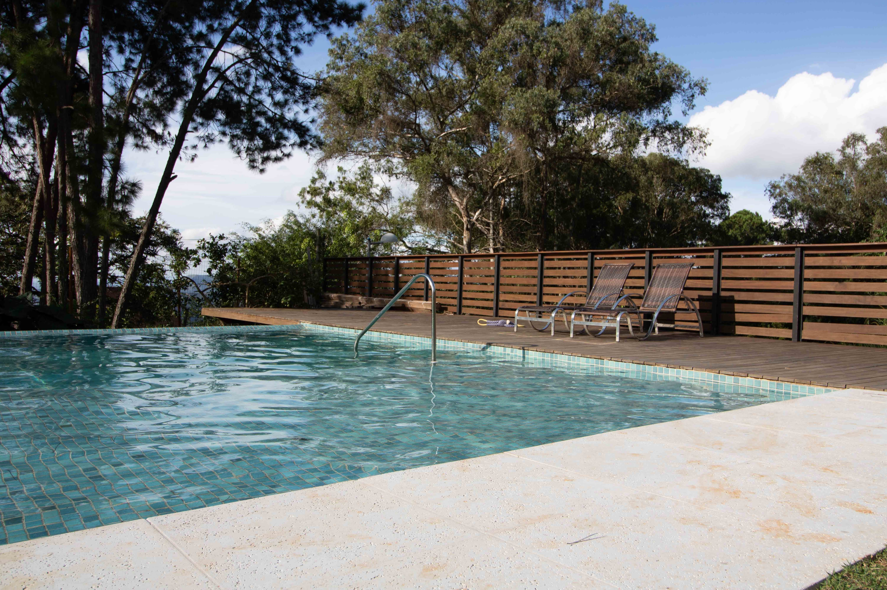

Lifeguarding was the first job I ever had. I started when I was 15. I learned a few things from this job, mainly patience and finding joy in my circumstances. Lifeguarding was very hard for me, sitting in the sun eight hours a day for $8.50 an hour was not my idea of a good day. However, I learned to be patient and content. I would have quit, but I felt really bad for the lifeguard company. This was right after covid and the company was really struggling to find enough people. They let me do things they usually have 18-year-olds do, because they were so short-staffed.
In N Out was where I went after lifeguarding. This was a drastic change for me. In N Out was so much better than lifeguarding. I worked for almost twice the money and it was way more fun. I made a lot of friends really quickly and grew to love working there. I looked forward to each shift. I worked really hard to do well for the customers and company. The management saw me working hard and quickly promoted me, and kept promoting me until I was cooking and started making $20 an hour. Usually at In N Out, it takes 2-3 years to become a cook, but I did it in about 9 months. I learned a lot from In N Out. I learned about working for a good company. In N Out gave me a chance to get a raise if I worked hard enough. They also threw parties for their associates and gave us plenty of benefits. In N Out cared about me as an individual, instead of just an employee, and I really liked that.

I learned I liked coding pretty quickly. I took a class where we did a little coding to help with a problem, and I loved it. I started doing classes about it and soon realized I was pretty good at it. There were many assignments where I was told they would take around three hours, but I did them in 30 minutes and got full marks. Soon, I decided to get a little job in coding to see if it was something I would truly like. I worked for my cousin with his business. He had an app to help small businesses with online marketing. I was doing pretty simple things most of the time, things like changing variable names, but by the end I was writing code to improve the app. I learned a lot during this. I learned a lot about databases and Github, along with other programs that developers use.